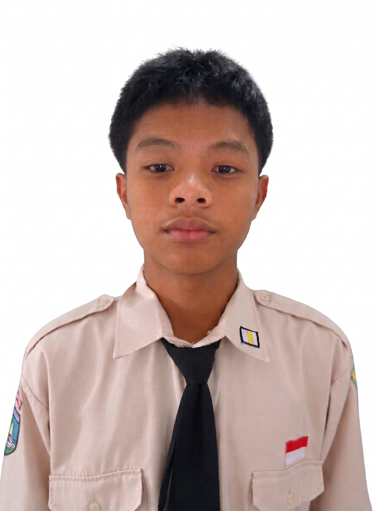
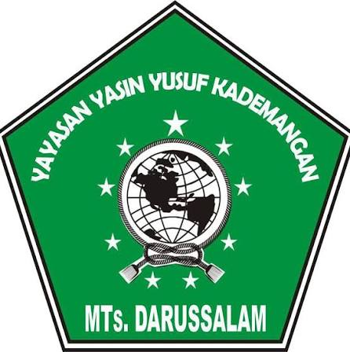

Tentang Saya

Nama saya Ega dari kelas XI TJKT 1 (No. Absen 10). Portofolio ini disusun sebagai wadah dokumentasi dan unjuk kerja atas kompetensi yang saya pelajari di bidang Teknik Jaringan Komputer dan Telekomunikasi, administrasi basis data, serta pemrograman.
Keahlian Saya
Computer Network & IP Subnetting
Database & MySQL
Java Programming (OOP)
Riwayat Pendidikan

MTs Darussalam Kademangan
Pendidikan Menengah Pertama
2022 - 2025

SMKN 1 Blitar
XI Teknik Jaringan Komputer dan Telekomunikasi (TJKT)
2025 - Sekarang